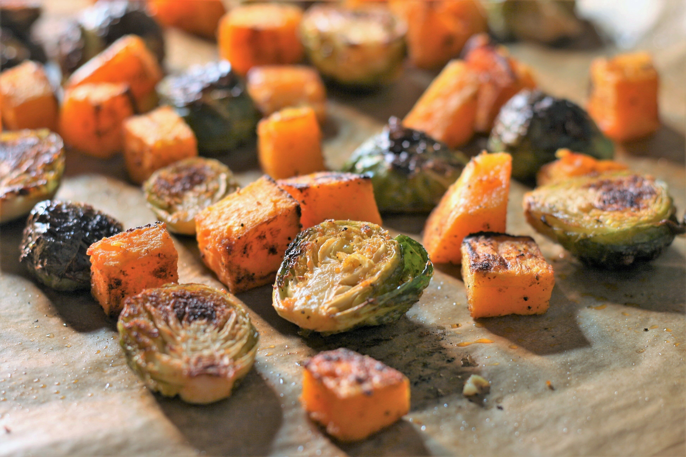

Sheet Pan Vegan Roasted Brussels Sprouts and Butternut Squash

Descriptipn
These crispy roasted winter vegetables, seasoned with garlic and smoked paprika, are a simple vegan side dish made in a sheet pan in just minutes.
Ingredients
- Brussels Sprouts
- butternut squash
- olive oil
- garlic powder
- smoked paprika
- ground black pepper
Steps
- Preheat the oven to 425 degrees F (220 degrees C). Line a baking sheet with parchment paper.
- Place Brussels sprouts and butternut squash in a single layer on the baking sheet. Drizzle with olive oil and sprinkle with garlic powder, smoked paprika, salt, and black pepper.
- Roast in the preheated oven until golden and crispy, about 25 minutes.